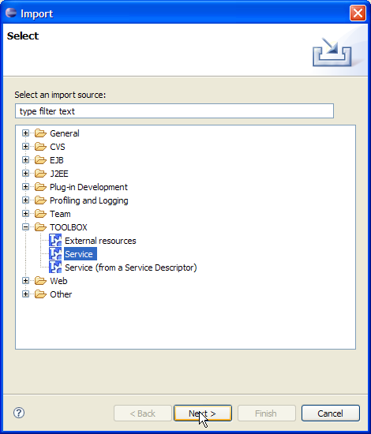
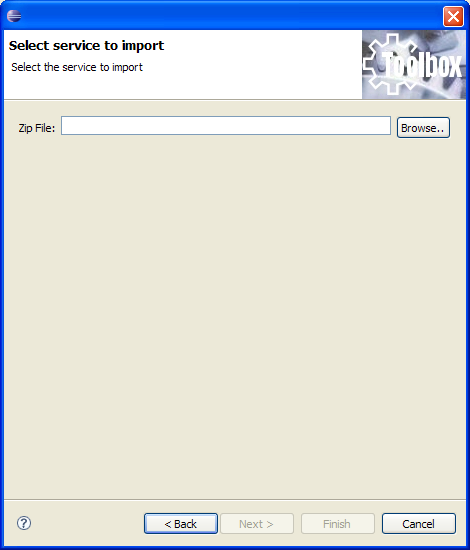

A service, deployed on another machine, can be imported into the TOOLBOX DE through import functionalities. To open the import wizard select "Import" from the "File" menu.

Select "TOOLBOX/Service" item and click "Next". The next wizard page lets you specify the zip archive that contains the service to import. This service descriptor can be created using the export functionalities exposed here.

Clicking on "Finish" the import task is performed and the service is imported into the workspace.